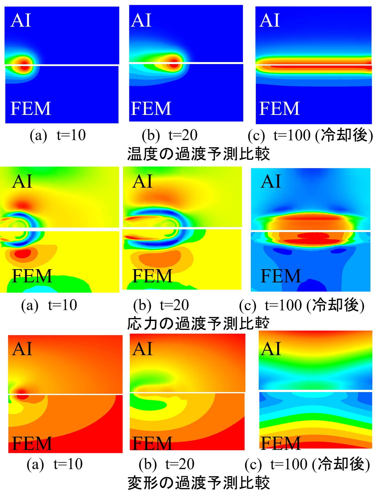
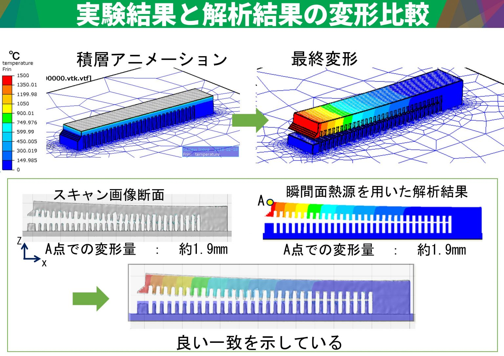

2024.06.03報告
9月4日～6日に北海道科学大学で行われる「溶接学会 2024年度 秋季全国大会」に、柴原研究室から12件の講演をエントリーしました。
9月4日～6日に北海道科学大学で行われる
「溶接学会 2024年度 秋季全国大会」
に、柴原研究室から以下の12件の講演をエントリーしましたのでお知らせ致します。
是非ともご来場頂きますよう、宜しくお願いします。
——————————
【口頭発表】
遺伝的アルゴリズムを用いた溶接変形を低減する溶接順序に関する検討
○前田新太郎，中村敬人、西原健作，永井卓也，岡部俊明、武田裕之(以上5名、コベルコ溶接テクノ)，河原充、生島一樹、柴原正和
ガス加熱時の熱変形に及ぼす熱源モデルの影響に関する検討
○松岡諒、前田新太郎、夏目糧平、田村光亮、山﨑洋輔(以上3名、日立造船)、生島一樹、柴原正和
マーカー粒子を用いたEuler型固体力学解析手法を用いたFSWシミュレーション
○山本航平、前田新太郎、生島一樹、柴原正和
固有ひずみを用いた弾性解析による金属積層造形時の熱変形に関する力学的検討
○幅田真史、佐々木駿俉、前田新太郎、生島一樹、柴原正和
AIを用いたFEM熱弾塑性解析による溶接過渡期における力学挙動の高速予測
○加藤拓也、前田新太郎、生島一樹、柴原正和
大規模鋼構造物多層溶接時の溶接変形に及ぼす諸因子の影響に関する検討
○永木勇人(高田機工)、山邉晃瑠、前田新太郎、生島一樹、柴原正和
多層溶接における簡易力学モデルの構築
○王聞達、前田新太郎、生島一樹、柴原正和
線状加熱における多重加熱部が変形に及ぼす影響
〇廣瀬天空、山本航平、加藤拓也、前田新太郎、生島一樹、柴原正和
金属積層造形時における力学挙動に及ぼす諸因子の影響に関する検討
〇佐々木駿伍、手銭永遠、王聞達、前田新太郎、生島一樹、柴原正和
【ポスター発表】
溶接過渡の残留液膜を考慮した高温割れ解析
○前田新太郎、王聞達、生島一樹、柴原正和
マーカー粒子を用いたEuler型固体力学解析手法を用いたFSWの力学解析
○山本航平、横山暁生、前田新太郎、生島一樹、柴原正和
固有ひずみを用いた弾性解析による金属積層造形の力学解析
○幅田真史、佐々木駿俉、前田新太郎、生島一樹、柴原正和
ーーーーーーーーーーーーーーーーーーーーーーーーーーーーーーーーーーーーーーーーーーーー
↓↓AIを用いたFEM熱弾塑性解析による溶接過渡期における力学挙動の高速予測 (イメージ図)↓↓
ーーーーーーーーーーーーーーーーーーーーーーーーーーーーーーーーーーーーーーーーーーーー

ーーーーーーーーーーーーーーーーーーーーーーーーーーーーーーーーーーーーーーーーーーーーーー
↓↓マーカー粒子を用いたEuler型固体力学解析手法を用いたFSWシミュレーション (イメージ図)↓↓
ーーーーーーーーーーーーーーーーーーーーーーーーーーーーーーーーーーーーーーーーーーーーーー

ーーーーーーーーーーーーーーーーーーーーーーーーーーーーーーーーーーーーー
↓↓固有ひずみを用いた弾性解析による金属積層造形時の熱変形 (イメージ図)↓↓
ーーーーーーーーーーーーーーーーーーーーーーーーーーーーーーーーーーーーー

※大阪公立大学 柴原研究室HPより